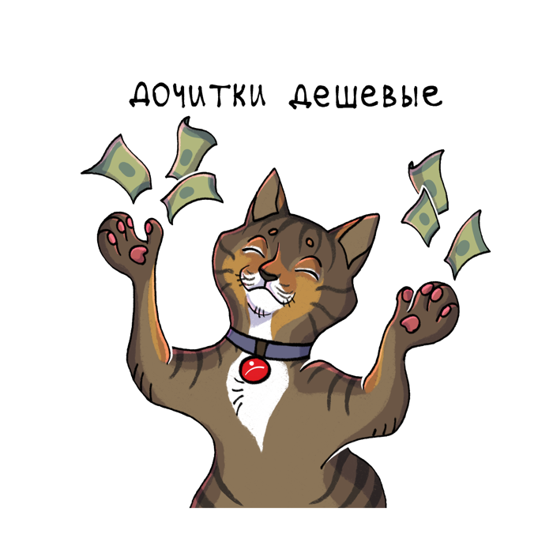

☀️ 29 лет · 1798 статей · 945 млн охвата — но первыми вас встречают коты
Пишем так, что даже ваш кот захочет купить
Свои авторы, редакторы и корректоры пишут статьи для Яндекс ПромоСтраниц и Дзена — и доводят их до заявок. Не «красивые тексты», а контент с характером, который дочитывают и покупают.
✓ Сертифицированный партнёр Яндекса с 2011
✓ Эксперт Яндекс Рекламы по ПромоСтраницам в команде
✓ Silver Mercury 2024 — лучшая брендформанс-кампания
Обсудить задачу
«А продаст ли ВАШ текст? Кинь его котам — дадим вердикт и 3 правки»
🐾Продаст или нет: проверить текст
Коты — это наша редакция в лицах: автор, редактор, корректор. Майя Блюм, главред (и кот-перфекционист).

…а с другой? 🐾

…дочитка с 22 до 7 ₽ и +45% продаж. Лови! 🪙